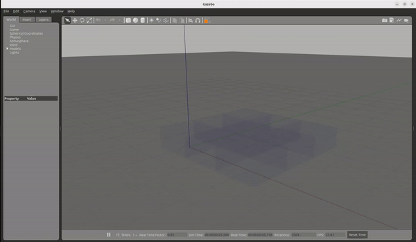

Further Resources
This website introduces the basic tools and mathematics of bigraphs for programming tiny drones.
Some resources are available for learning more about this approach.
Literature
Here are some of them:
- J. Beal, S. Dulman, K. Usbeck, M. Viroli, and N. Correll, “Organizing the Aggregate: Languages for Spatial Computing.” arXiv, Apr. 03, 2012.
- Prokopenko, M. (Hrsg.): Guided Self-Organization: Inception, Emergence, Complexity and Computation. Bd. 9. Berlin, Heidelberg: Springer, 2014 — ISBN 978-3-642-53733-2
- J. L. Fernandez-Marquez, G. Di Marzo Serugendo, S. Montagna, M. Viroli, and J. L. Arcos, “Description and composition of bio-inspired design patterns: a complete overview,” Nat Comput, vol. 12, no. 1, pp. 43–67, Mar. 2013, doi: 10.1007/s11047-012-9324-y
- Pereira, Eloi; Krainer, Clemens; da Silva, Pedro Marques; Kirsch, Christoph M.; Sengupta, Raja: A runtime system for logical-space programming. In: Proceedings of the Second International Workshop on the Swarm at the Edge of the Cloud, SWEC ’15. New York, NY, USA : Association for Computing Machinery, 2015 — ISBN 978-1-4503-3595-9, S. 28–33
- Pereira, Eloi: Mobile Reactive Systems over Bigraphical Machines - A Programming Model and its Implementation. Berkeley, University of California, Dissertation, 2015
- Pereira, Eloi; da Silva, Pedro Marques; Krainer, Clemens; Sengupta, Raja; Kirsch, Christoph M.: Computation over Worlds with Dynamic Structure. In: 3rd International Workshop on Bigraphs, 2013
- Cybulski, Piotr; Zieliński, Zbigniew: UAV Swarms Behavior Modeling Using Tracking Bigraphical Reactive Systems. In: Sensors Bd. 21, Multidisciplinary Digital Publishing Institute (2021), Nr. 2, S. 622
- Grzelak, Dominik: "Programming Drone Collectives: Towards Safe Plug-And-Play Modularity," in Proceedings of the 1st German Robotics Conference (GRC), Nürnberg, Germany: Robotics Institute Germany, Mar. 2025. Available: https://ras.papercept.net/conferences/conferences/GRC25/program/GRC25_ContentListWeb_1.html#thga_58. — Standalone video contribution (demo video, abstract, and poster)
- Initial Documentation and Theory of Bi-Spatial Structure, i.e., Topology-aware Bigraphs (Preprint) A Bigraphical Framework for Modeling and Simulation of UAV-based Inspection Scenarios
- Tools and Code (UniAgent Platform): https://github.com/UniAgent-Platform, https://github.com/orgs/UniAgent-CyberPhysicalAssets/
Research Tools
A quick look at some of the tools that are currently being developed.
Term Builder:
- For defining predefined navigation paths for agents
- See also a related book: Grammatical Picture Generation. in Texts in Theoretical Computer Science. An EATCS Series. Berlin/Heidelberg: Springer-Verlag, 2006. doi: 10.1007/3-540-32507-7. Available: http://link.springer.com/10.1007/3-540-32507-7.
Unfolding of Spatial Computational Structures
- Note that graph structures remain invariant under permutations of their representations.
- However, the orthogonality between the bigraph’s place graph (forest) and link graph (hypergraph) enables specially designed bigraphs to be represented in a 3D setting.
BiGrid Gazebo Visualizer:
